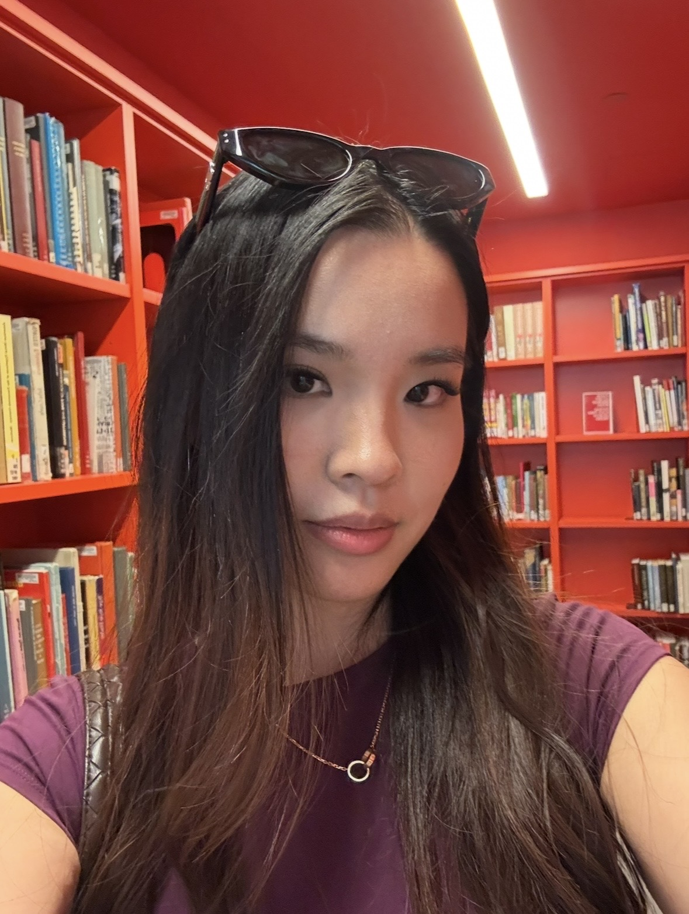

PhotoI'm Nicole (Qinyuan Zhou), a first-year graduate student in the Integrated Digital Media (IDM) program at NYU Tandon. I'm interested in the space where design, technology, and research methods meet — building things that ask questions as much as they solve them.
Before IDM, [add a line here about your background — previous studies, work, or the thread that led you into this program]. I'm currently exploring ideation and prototyping, creative coding, and research methods through my coursework, alongside independent and collaborative projects.
This site collects my previous work and what I'm making in class as I go through the program. Feel free to reach out if anything here resonates with you.
Curious how I ended up here? Read my intellectual bibliography →
Work from Ideation & Prototyping — early-stage concepting, sketching, and rapid physical or digital prototypes.
Work from Creative Coding — generative sketches, interactive pieces, and experiments in code as a design material.
Work from Research Methods — studies, interview synthesis, and other qualitative and quantitative research exercises.